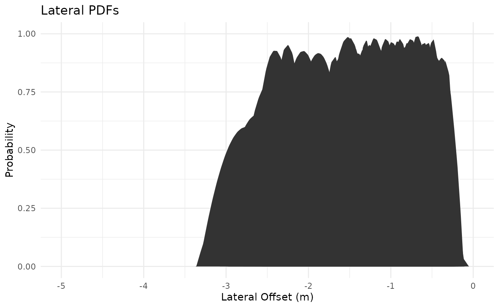
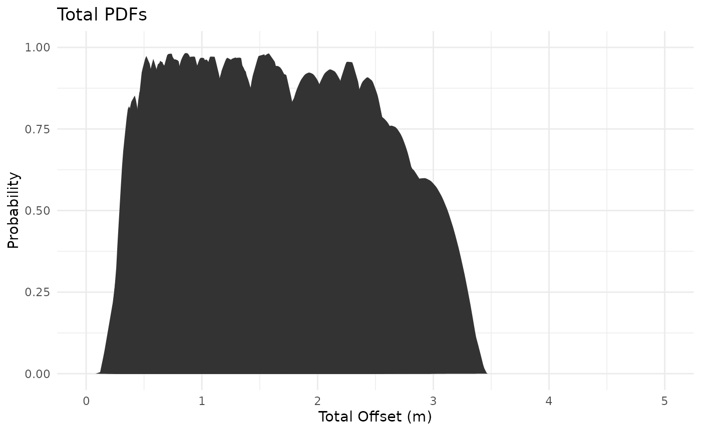
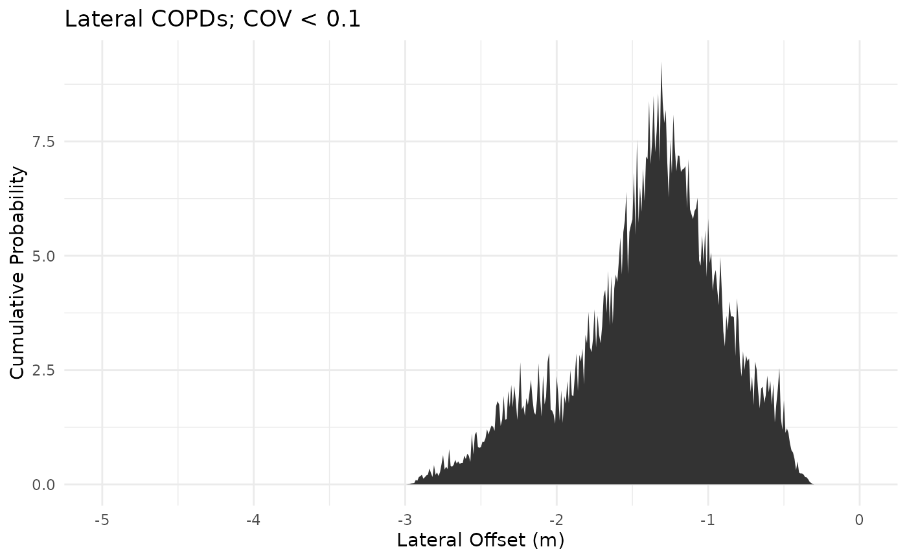
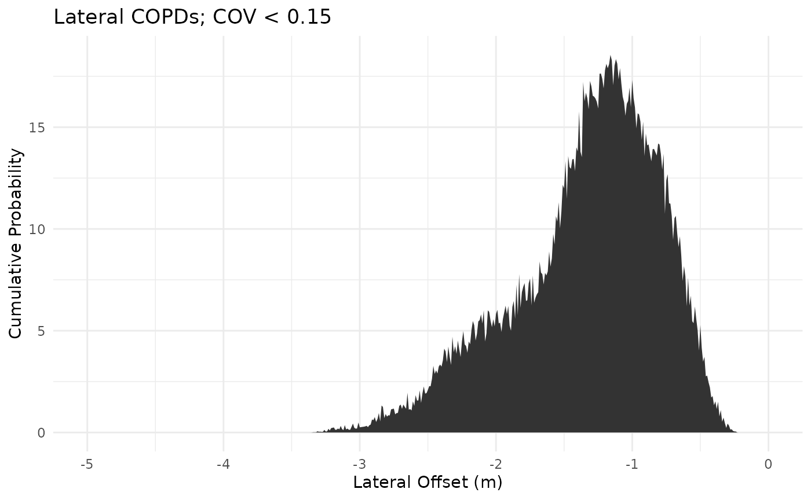
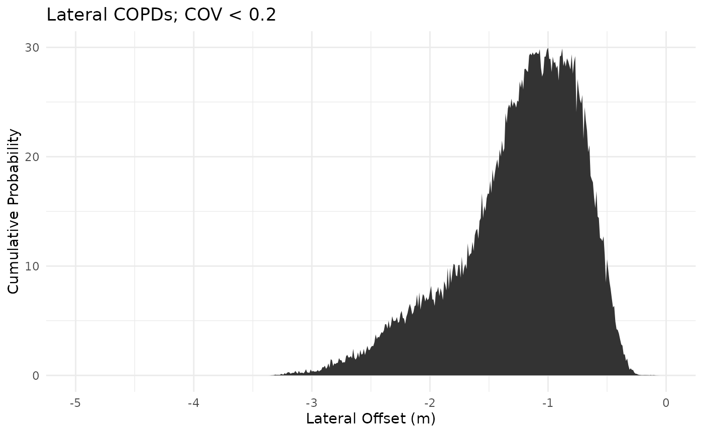

howto_copdr
howto_copdr.Rmd
library(copdr)1. What are COPDs and why are they used to analyze earthquakes?
First of all, what are cumulative offset probability distribution (COPD) functions, and how are they used in earthquake offset analyses? In general, when scientists are trying to determine the size of past earthquakes, they need to know how much slip occurred in a single earthquake. This is because the magnitude of total offset is correlated to the moment magnitude/energy released during an earthquake (e.g., the Richter Scale). To determine the amount of total offset that occurs during earthquakes, we must find linear features that intersect the surface trace of a fault, and reconstruct the feature by ‘backslipping’ or undoing the motion that deformed that originally-linear feature. There are fantastic historic examples of roads and fences being split apart by earthquakes, but we may also use naturally sub-linear geologic features such as glacier moraines, streams, and ridges.
In Figure 1, a single point bar is right-laterally offset by a single fault trace.

Figure 1: A right-laterally offset bar in an alluvial fan. Dashed white lines show the bar edges, the red line indicates the fault trace, and yellow arrows show the sense of slip. Panamint Valley, California. Modified from LaPlante (2022).
Assuming that this was one feature originally, we can measure how much one side of the bar moved relative to the other by measuring the distance between the southern edge of the western bar segment and the southern edge of the eastern bar segment. We can also measure the distance between the northern edge of the western bar segment and the northern edge of the eastern bar segment. There is also the crest of the bar, representing its maximum height at a central E-W axis, that provides another lateral offset measurement. As you might imagine, there is considerable uncertainty within where these bar edges and crest lines are, and this can change the measured lateral offset of this feature, depending on scientific interpretations. Confused yet?
Figure 2 is a graphical representation of a right-laterally offset bar, similar to the geomorphic feature shown in Figure 1. What Figure 2d shows is that when we estimate the amount of slip on a fault from an offset feature by ‘backslipping’ that feature, we get a most-likely value (where correlation = 1), bounded by a maximum and a minimum slip value (where correlation = 0). This curve approximates a Gaussian distribution. The width of this Gaussian distribution, or normal probability distribution function (PDF), is related to the uncertainty of the offset measurement. We can quantify that uncertainty in a number of ways including the standard deviation, the coefficient of variation, or confidence scaling. Confidence scaling can vary across different scientific studies, and is used to more-strongly weight the more sharply-defined piercing points (linear features) when we combine/sum multiple PDFs together to create a COPD.
![Figure 2: A schematic diagram showing the reconstruction, or 'backslipping', of a point bar. (a) The fault (solid line) and the geomorphic profile of the bar on the western side of the fault (A-A’) and the eastern side of the fault (B-B’). (b) Topographic profiles A-A’ and B-B’ before lateral and vertical shift. (c) Topographic profiles A-A’ and B-B’ after lateral and vertical shift. (d) By mathematically restoring the offset geomorphic marker, a Matlab code generates a lateral shift-correlation plot that predicts a most likely displacement for a piercing point. The vertical offset is found by finding the amount of vertical shift necessary to achieve a correlation coefficient of 1 on the lateral profile shift line. Figure from LaPlante (2022).](https://github.com/AubreyLaPlante/external_figs/blob/main/LaPlante2022_PDFs.png?raw=true)
Figure 2: A schematic diagram showing the reconstruction, or ‘backslipping’, of a point bar. (a) The fault (solid line) and the geomorphic profile of the bar on the western side of the fault (A-A’) and the eastern side of the fault (B-B’). (b) Topographic profiles A-A’ and B-B’ before lateral and vertical shift. (c) Topographic profiles A-A’ and B-B’ after lateral and vertical shift. (d) By mathematically restoring the offset geomorphic marker, a Matlab code generates a lateral shift-correlation plot that predicts a most likely displacement for a piercing point. The vertical offset is found by finding the amount of vertical shift necessary to achieve a correlation coefficient of 1 on the lateral profile shift line. Figure from LaPlante (2022).
That finally brings us to COPDs. COPDs are the normal functions, the PDFs, summed together for many linear features across the entire length of a fault zone. One commonly used example is the well-defined COPD plots from the Carrizo Plain segment of the San Andreas fault in California, US. Similar to the example shown above, Zielke et al., (2010) illustrates one example of right-lateral offset of a single drainage. In this example, the PDF peak occurs at around 5 m, with an uncertainty of ± ~0.6 - 0.7 m.

Figure 3: A single offset displacement marker from the Carrizo segment of the San Andreas fault, in southern California. (a) The aerial view of the offset channel from a digital elevation model. (b) Red and blue cross sections of the offset channel, parallel to the fault plane. (c) The resulting right-lateral offset PDF for this channel. Figure from Zielke et al., (2010).
Zielke et al., (2010), combines dozens of PDFs along this segment of the San Andreas fault. This combined/summed PDF plot (Figure 4b) is the cumulative offset probability distribution (COPD) function. Each of these individual PDFs have different local offset maxima because each offset marker records a different number of earthquakes. This is consistent with what we would expect, such that the oldest geomorphic features have been displaced by many earthquakes, while the youngest generations of Holocene alluvium may have only experienced the most recent earthquake. Assuming that earthquakes on the southern San Andreas fault are perfectly elastic, we would also expect to see regular PDF peak spacing from subsequent earthquakes producing the same total magnitudes of slip.
![Figure 4: Individual PDFs from a ~50 km extent of the Carrizo fault segment of the southern San Andreas fault. All PDFs are summed together to create a COPD plot, which is useful in interpreting the magnitude of total slip in past earthquakes. (a) Individual PDFs are plotted in space, with distance from north to south on the X axis and total offset magnitude on the Y axis. PDFs are colored by average slip magnitude, with orange representing the clustering of the least amount of slip and light blue representing the clustering of the largest magnitude of slip. (b) All PDFs are summed together to isolate clusters of total offset magnitudes. Theoretically, each peak represents the displacement associated with a different number of earthquakes, assuming that each earthquake produced the same magnitude of slip. Therefore, orange curves represent one earthquake, purple curves represent two earthquakes, yellow represents three earthquakes, etc. Figure from Zielke et al., (2010).](https://github.com/AubreyLaPlante/external_figs/blob/main/Zielke2010_carrizo.png?raw=true)
Figure 4: Individual PDFs from a ~50 km extent of the Carrizo fault segment of the southern San Andreas fault. All PDFs are summed together to create a COPD plot, which is useful in interpreting the magnitude of total slip in past earthquakes. (a) Individual PDFs are plotted in space, with distance from north to south on the X axis and total offset magnitude on the Y axis. PDFs are colored by average slip magnitude, with orange representing the clustering of the least amount of slip and light blue representing the clustering of the largest magnitude of slip. (b) All PDFs are summed together to isolate clusters of total offset magnitudes. Theoretically, each peak represents the displacement associated with a different number of earthquakes, assuming that each earthquake produced the same magnitude of slip. Therefore, orange curves represent one earthquake, purple curves represent two earthquakes, yellow represents three earthquakes, etc. Figure from Zielke et al., (2010).
In Figure 4b, we see peaks in the COPD plot of 5m, 10m, 15m, and so on. This is useful, and consistent with our assumptions. It appears that each earthquake on the Carrizo segment produces about ~5m of right-lateral strike slip motion. Using this number for average displacement we can use scaling relationships (Wells and Coppersmith, 1994) to determine that this amount of average displacement corresponds to a rupture length of ~136 km and an earthquake magnitude of Mw ~7.7. COPDs can be really useful to estimate future seismic hazards!
2. Introduction to Cumulative Offset Probability Distribution functions in R (copdr)
This code is meant to import probability distribution functions (PDFs), i.e. Gaussian curves, and combine them in a modicum of ways for the user, based on several filters to remove the noisy PDFs or PDFs with high uncertainties (i.e. large standard deviations, high coefficient of variation, etc). These PDFs are produced from LaDiCaoz, a Matlab program that allows you to ‘backslip’ offset on a fault from digital elevation models (DEMs) or digital surface models (DSMs). It is a lot of acronyms, but stay with me.
2.1 Load in data
First, you need to make sure that the full PDF dataset and its metadata CSV is in a folder in your working directory. The default dataset is pre-coded for your convenience.
a. User-defined inputs
There are three global variables that the user can set:
- directory - this is where all your data are located.
- folder_name - this is the folder_name in the directory that holds
all the PDF .mat files.
- csv_name - this is the reference metadata that has latitude, longitude, total, lateral, or vertical offset values, standard deviation of offset measurements, confidence rankings, and any other data that you collected. You may see example.csv or example.xlsx to see how this metadata should be formatted. However, this data must be in .csv form before loading it in.
directory <<- system.file("extdata", package = "copdr")
folder_name <<- "example_mat"
csv_name <<- "example.csv"b. Importing the data
This first part of the code does the following:
- file2vect() takes the folder_name set above (i.e. ‘example_mat’) in
the working directory and makes a vector of all the file names with the
file format ‘.mat’.
- mat2list() creates a list with three matrices, 1. lateral, 2. vertical, 3. total offset.
- Imports the metadata from a reference .csv file. See “example.csv” or “example.xlsx” in the external data section for how this reference metadata should be formatted.
backslip_names <- file2vect(directory, folder_name)
backslip_data <- mat2list(directory,folder_name,backslip_names)
backslip_csv <- readr::read_csv(file.path(directory,csv_name), show_col_types = FALSE)3. Data pre-processing
3.1. Visualize the raw data
This code plots all the PDFs data on a default coordinate axis, to check that the data loaded in correctly. This is NOT the COPD plot yet, as we have not summed the PDFs together, so the Y-axis is still probability with a max of 1. With the default dataset, the axes are larger than the extent of the data. You should not see any negative probabilities. For now, ignore the sign of the lateral and vertical offset magnitudes.
plotPDF(backslip_data[[1]],"lateral", simplify = "Y") + ThemeMain
plotPDF(backslip_data[[2]],"vertical",simplify = "Y") + ThemeMain
plotPDF(backslip_data[[3]],"total", simplify = "Y") + ThemeMain3.2 Clip raw data and plot
Sometimes we may have datasets that are larger than the extent that we would like to analyze. For example, in some cases we may only want to look at small values of displacement, so we would need to clip out any data that is larger than a threshold value. With the default dataset, there are extra zeros on either side of each PDF curve, beyond the maximum and minimum values. These extra zeros are unnecessary and may make it difficult when combining the datasets, if each PDF has different lengths of probability vectors. So, we will uniformly clip the PDFs to remove anything unnecessary for future analysis.
b. Clipping the data
The following code clips each of the datasets (lateral, vertical, total) by the boundaries defined above, and plots the new, clipped datasets.
#clip x limits of data
backslip_data_clip <- list(
backslip_lat = data.clip(backslip_data[[1]],"lateral",lat_limits[[1]],lat_limits[[2]]),
backslip_vert = data.clip(backslip_data[[2]],"vertical",vert_limits[[1]],vert_limits[[2]]),
backslip_tot = data.clip(backslip_data[[3]],"total",total_limits[[1]],total_limits[[2]])
)
#plot clipped data
plotPDF(backslip_data_clip[[1]],"lateral",
lat_limits[[1]],lat_limits[[2]],lat_limits[[3]],lat_limits[[4]], simplify = "Y")+ ThemeMain
plotPDF(backslip_data_clip[[2]],"vertical",
vert_limits[[1]],vert_limits[[2]], vert_limits[[3]],vert_limits[[4]], simplify = "Y")+ ThemeMain
plotPDF(backslip_data_clip[[3]],"total",
total_limits[[1]],total_limits[[2]],total_limits[[3]],total_limits[[4]], simplify = "Y")+ ThemeMain
3.3 Confidence Scaling
This code scales each PDF by a confidence value. These confidence values are specific to the dataset, where 1 is the maximum confidence and your largest value is the lowest confidence. Confidence scales vary widely, but are generally a study-specific ranking involving many qualitative evaluations of how likely an offset geomorphic feature is representative of an accurate and precise earthquake displacement value. This may involve a relative ranking of how degraded a geomorphic feature is, the angle that it intersects a fault trace (higher angles are better), or whether there appears to be post-earthquake modification by streams or human activity.
In this dataset, 3 is the lowest confidence. The code is set up to accommodate any confidence scale (1 to 3, 1 to 5, 1 to 10, etc). If your confidence values are flipped in the reference metadata, such that 1 is the lowest confidence value, you will need to invert the values in your metadata csv.
Developer note to self:
Currently, this code is set up to perform confidence scaling on the clipped dataset from the previous section, and output a Cscaled dataset. In a future version of this code, each of these data-filtering and scaling sections will be optional, and be set up to perform confidence scaling on the backslip_data, replacing the input dataset with the output dataset from each section.
a. User-defined inputs
Specify which column of the metadata .csv corresponds to the confidence rankings, and the total number of offset geomorphic features. This N_observations number should be equal to the number of .mat files in your input folder_name. The default input dataset has 205 independent offset measurements.
confidence_column = 9
N_observations = 205b. Confidence-scaling the data
#scale the data by confidence values and put in a new Cscale list
backslip_data_Cscale <- backslip_data
for(i in 1:3){
backslip_data_Cscale[[i]] <- conf.scale(backslip_data_clip[[i]],backslip_csv, confidence_column, N_observations)
}
#plot confidence-scaled data
plotPDF(backslip_data_Cscale[[1]],"lateral",
lat_limits[[1]],lat_limits[[2]],lat_limits[[3]],lat_limits[[4]], simplify = "Y")+ ThemeMain
plotPDF(backslip_data_Cscale[[2]],"vertical",
vert_limits[[1]],vert_limits[[2]], vert_limits[[3]],vert_limits[[4]], simplify = "Y")+ ThemeMain
plotPDF(backslip_data_Cscale[[3]],"total",
total_limits[[1]],total_limits[[2]],total_limits[[3]],total_limits[[4]], simplify = "Y")+ ThemeMain3.4 Coefficient of variation (COV) calculation
The coefficient of variation (COV) is the ratio of the standard deviation (\(\sigma\)) to the sample mean (\(\mu\)) for a single PDF and is a statistical measure of the relative dispersion (also called scatter, or spread) of the dataset.
\[COV = \frac{\sigma}{\mu}\]
This parameter is an alternative to standard deviation to measure the relative uncertainty of offset geomorphic features. One disadvantage of filtering by COV is that if standard deviations are relatively constant across a dataset, distributions with smaller means will tend to have larger COVs. Therefore, removing PDFs with larger COVs may lessen, or remove entirely, peaks at displacement means < 1 m. Generally, standard deviation tends to be a more reliable measure of relative uncertainty for smaller magnitude offsets, while coefficient of variation tends to be a more relable measure of relative uncertainty for larger magnitude offsets. In any case, it is useful to have this measurement of dispersion in your reference csv.
The master reference CSV “backslip_csv” should have 4-6 columns for
displacement statistics including:
- lateral mean
- lateral standard deviation - vertical mean
- vertical standard deviation
- total mean
- total standard devation
The inputs for this section will need to be the columns of offset data. The following code calculates the coefficient of variation, which is the standard deviation divided by the mean. I used lateral in my example because in the example data, vertical displacement is poorly resolved and of very small magnitude.
User-defined inputs
# these are the column numbers corresponding to this data in the reference csv
columnNums <- list(
lat_mean = 13,
lat_stdev = 14,
vert_mean = 15,
vert_stdev = 16,
total_mean = 17,
total_stdev = 18)4. Filters
The goal of filtering PDFs prior to summing them together is to find where clusters of data produce the largest, most statistically significant peaks. In selecting certain PDFs for COPD analysis, we want to minimize the amount of dispersion and uncertainty that could obscure the peaks associated earthquake magnitudes. However, we do not want to remove enough data that we begin to introduce statistically insignificant peaks, such that we over-interpret the number of earthquakes. We will tackle the statistical significance part with an optimization problem later on in the code.
As discussed above in section 3.4, there are advantages and disadvantages to filtering data through a large COV filter. There are also advantages and disadvantages to using only standard deviation filters. One problem with removing PDFs with larger standard deviations is that this filtering method will produce a bias towards removing larger displacements in older fan surfaces, due to the time-degradation of that geomorphic surface and an increase in uncertainty of the offset.
Ultimately, it is your job to pick and choose the filters that produce the most statistically significant peaks. This section contains (it will eventually contain) filters for standard deviation, coefficient of variation, geomorphic-age, and piercing point type. Each of these filters will work via the following steps:
-User-defined set of criteria for a single category/column of the reference metadata .csv (geomorphic feature, standard deviation, etc) -Create a clipped metadata .csv with only the values/characteristics indicated by the filter (that meet a set of critera) -Clip the input offset matrix to include only filenames in the clipped metadata -Sum these PDFs together to create a COPD
4.1 COV filters
a. User-defined inputs
Specify the threshold values of COV that you want to remove from the input matrices.
#these are the COV values you want to filter for
COV_filter_vals <- seq(.10,.30, by=0.05) b. Filter PDF data by threshold COV values
The following code creates the clipped reference .csv(s) for each of the threshold values set above, and then filters the input matrix (note: currently, the Cscaled dataset ) using the clipped .csv metadata.
The code then produces the COPD plots.
Developer’s note
This section is very code-heavy and I am in progress of turning this into a function. ideally, the user will be able to plot every COV-threshold filtered copd on the same figure, so that they can compare which filter provides the best results to analyze peaks.
latPlot <- vertPlot <- totPlot <- list()
for (i in 1:length(COV_filter_vals)){
latPlot[[i]] <- plotCOPD(lat_cov2[[i]],"lateral",COV_filter_vals[i], lat_limits[[1]], lat_limits[[2]]) + ThemeMain
}
for (i in 1:length(COV_filter_vals)){
vertPlot[[i]] <- plotCOPD(vert_cov2[[i]],"vertical",COV_filter_vals[i], vert_limits[[1]],vert_limits[[2]]) + ThemeMain
}
for (i in 1:length(COV_filter_vals)){
totPlot[[i]] <- plotCOPD(total_cov2[[i]],"total",COV_filter_vals[i], total_limits[[1]],total_limits[[2]]) + ThemeMain
}
for(i in 1:length(COV_filter_vals)){
gridExtra::grid.arrange(latPlot[[i]])
}
for(i in 1:length(COV_filter_vals)){
gridExtra::grid.arrange(vertPlot[[1]])
}


for(i in 1:length(COV_filter_vals)){
gridExtra::grid.arrange(totPlot[[i]])
}
#plotCOPD(lat_cov2[[5]] ,"lateral", lat_limits[[1]], lat_limits[[2]])
#plotCOPD(vert_cov2[[5]] ,"vertical", vert_limits[[1]],vert_limits[[2]])
#plotCOPD(total_cov2[[5]] ,"total", total_limits[[1]],total_limits[[2]])Which COV filter produces the best peaks, without removing too much of the original data?